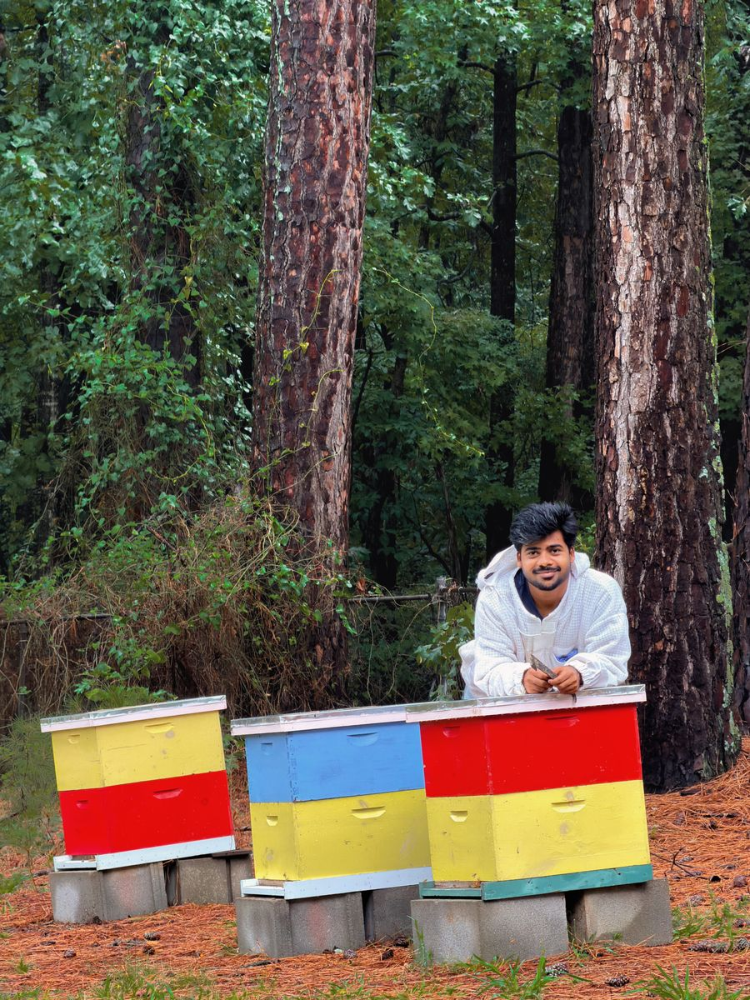

Jan 2025 – present
PhD research: honey bee viruses and colony health
My PhD research focuses on the relationship between honey bee health, viral infections and the environmental stressors that contribute to colony decline. In particular, I study how viruses interact with their honey bee hosts and how these interactions influence colony survival over time.
The overall goal is to identify the key biological and environmental factors associated with colony loss, with a focus on viral dynamics and immune responses.
What I do
- Honey bee colony management and field sampling of adult bees and eggs.
- Design and execution of injection-based bioassays for virus–host interaction studies.
- Virus purification, RNA extraction, cDNA synthesis and qPCR-based molecular analyses.
- Support for honey bee health extension and outreach activities.
- Collaboration with multiple laboratories.
Publications
In preparation.
Principal Investigator: Dr. Esmaeli Amiri, Assistant Research and Extension Professor, Mississippi State University. ea795@msstate.edu